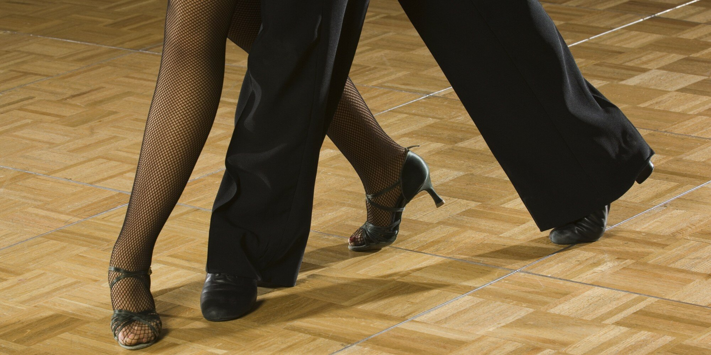
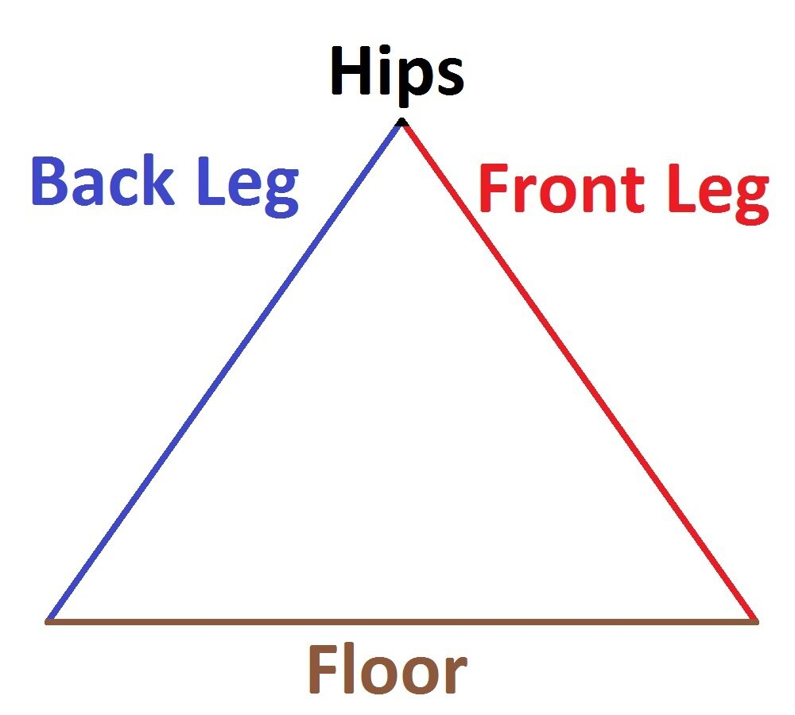
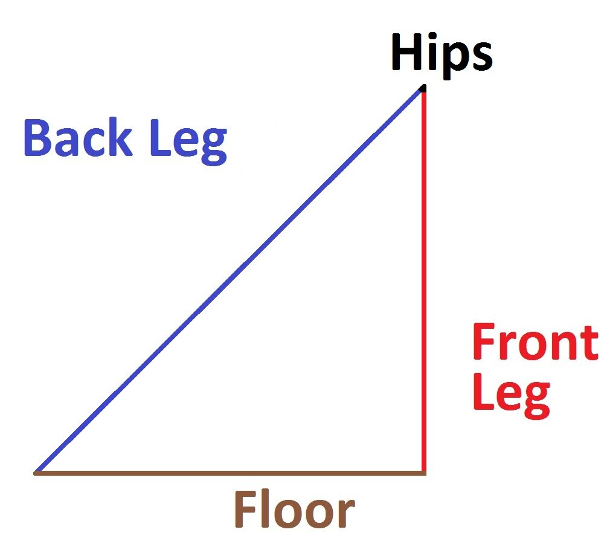
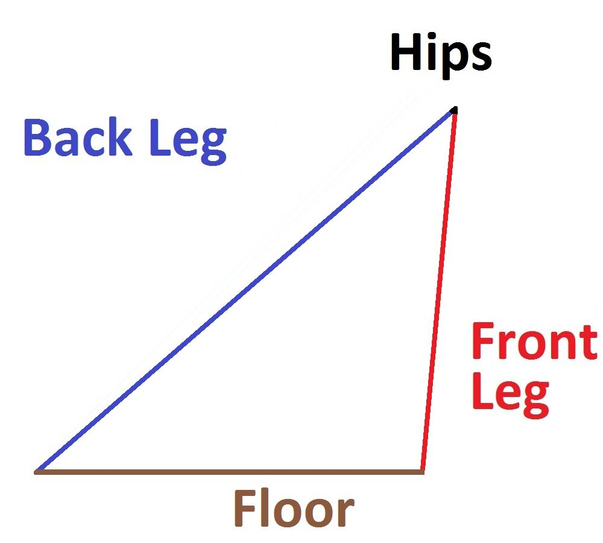

Timing the Rumba Walk 
24 May 2017
No matter your level, you should be practicing Rumba Walks. Gaynor Fairweather, 11-time Professional Latin World Champion with her partner Donnie Burns, is said to have practiced Rumba Walks at least an hour every day. The reason for this is that the principle body actions found in every movement in Cha Cha, Rumba, and (with slight modification) Samba are all found in the Rumba Walks, and by practicing the Walks in isolation a dancer can remove himself from the confusion of choreography and steps to work on what is fundamentally important, and found throughout. With that in mind, it is extremely important to know not only what to do within a Rumba Walk, but also when exactly to do it, and this is where many dancers have problems - they are doing the correct movements, but not at the right time, so their overall movement is not powerful, and their image is not beautiful. If you ask 10 different dancers how they dance their Rumba Walks, you will get 10 different answers, so this article will review the elements of the Forward Walk that are generally accepted, and more traditional. This article will focus on both the what and the when of the Rumba Walk.
Starting Position
Where you begin your Rumba Walk is arbitrary. It is like saying what position should the wheel be in before it starts turning. But in order to talk about it, we do need to choose a starting point, so for the purposes of this discussion it will be with the weight over the ball of the LF, with that foot flat on the floor. The RF will be held with only the toe touching the floor, with the heel lifted as high from the floor as possible and the foot pointed to the maximum. The toe of the RF will be pressed against the instep of the LF. For reference, let us say you are facing LOD.
It is very important to stand with good posture, which means the collar bone should be projected forward without lifting the chin, and the bellybutton should be pulled toward the spine so as to narrow the waistline, but without extending the lower ribs. The shoulders should be relaxed, and the arms allowed to move freely with the body, without dangling or being held stiffly. This posture should be maintained throughout the dance.
1) The Weight
The first thing that must happen before you move is that you must send your weight forward. As you walk down the street, you do not send your legs out ahead of your body to grab at the floor and then lurch yourself onto them. Instead, the first thing you do is initiate an ever so slight imbalance within your own body toward the direction you want to move. Then, as you begin to fall in that direction, you move your foot under your body to receive your weight. That is why if you began to walk somewhere and caught your foot on something, you would fall - because you sent your weight there before moving your foot.
The same is true for dancing. The first thing you must do is send your weight forward, and because of the posture, you will feel that it is your collarbones or rib cage that lead the way. As you send your weight further forward, you will feel that your weight rolls further toward the front of your foot. Right before you are about to fall, the free leg will be sent forward to take a step.
This first movement is very slight, but extremely important to have a good Rumba Walk. Can you imagine how strange you would look if you walked down the street, having omited sending your weight forward first?
2) The Step
When your weight has rolled so far forward that you feel you are about to fall, send the RF forward to take a step. The RF will move forward quickly, but not instantaneously, so as it moves forward you will continue to a controlled fall forward, and push from the back foot. The right knee started bent, but it will straighten just before weight arrives on the foot. The RF will remain pointed to the maximum from the ankle all the way to the toe, until weight arrives onto it, at which point the ankle will remain pointed even though the toe flexes to allow for weight to be held on the ball of the foot. You will end split weight between the ball of your RF and the ball of your LF, with both heels off the floor and both knees straight. You should feel that your legs and the floor make an isosceles triangle. Traditionally, the front foot points straight forward, however many dancers for the purpose of balance and aesthetics turn the front foot out very slightly. The back foot will be turned out approximately 1/8 at this point.
This is a somewhat unstable position, but you will only pass through this position, never stopping in it when actually dancing.
3) Receiving the Weight
In order for the RF to receive more weight, the heel will lower smoothly to the floor. Lowering the heel both smoothly and quickly requires strong and coordinated foot and calf muscles, which will be acquired through practice. As the heel lowers, more weight will be received onto the front foot, but strong pressure should be kept into the ball of the back foot. Both knees are still straight at this point.
With your front heel lowering to the floor and your weight rolling forward, your front leg (hip socket to floor) is not as long as the back leg, since your back leg includes the length of your foot all the way to where the ball of the foot touches the floor. This will mean you will feel more as if your legs and the floor form a right triangle.
4) Settling the Hip
With strong pressure into the back foot, roll from the ball of the foot all the way to the inside edge of the big toe, turning the foot out even more until it is pointing somewhere between Centre and DC against LOD, depending on your flexibility. A straight line should be made from the very tip of your big toe all the way to your hip, with both knees straight. Take great care that the left ankle is not sickled. At this point, you should have 95% of the weight in the front foot, and 5% of your weight should be pressure going into the floor through the toe of your back foot.
When you rolled from the ball of the foot to the toe without sickling the ankle or bending the knee, your leg essentially became longer. This distorts the right triangle your legs and the floor had made.
This distortion allows the hips to go forward. Namely, the front hip bone should move toward and even past the toes of the front foot. This is called pendular hip motion, and it always moves toward the foot that is receiving the weight, whether that step has been taken forward, to the side, or back. Make sure that as this happens, you do not counterbalance by sending your upper body backward. Even if the hips move slightly beyond the toes of the front foot, the pressure of the toe of the back foot into the floor and the weight of the leg behind you will stop you from falling forward.
5) Rotating the Hip
From here, the pendular action of the front hip will reach its maximum forward, either due to your flexibility or your balance, and it will rotate to the right and back. Your hip bones are connected through your pelvis, so as one goes back the other should come forward. This is known as rotary hip motion.
When you took a step forward with the RF, your right hip naturally went forward, so the first half of the rotary action will be to bring your hips back in line. As you draw the left hip bone in line with the right, it will pull the back leg forward, so allow the left knee to bend, but keep the ankle and toe pointed to the maximum. This will bring you back to the starting position. The second half of the rotary hip action will happen naturally - it happens when you go from the starting position into another walk and take a step forward.
Timing
To review, these are the main actions and the order in which they should be performed.
1) Send the weight forward
2) Extend the right leg, straightening the R knee
3) Achieve a split weight position
4) Lower the R heel
5) Roll the weight onto the RF, with strong pressure into the ball of the LF
6) Continue to roll through the LF all the way to the toe
7) Pendular Hip Action
8) Rotary Hip Action, bend the free leg
Exactly when you do each action in relation to the music depends on your interpretation of the music and what you want to emphasize in your walks: smoothness, sharpness, etc. When you do each action in relation to each other action, however, is pure mechanics. Doing these motions in any other order will result in a problem within the Rumba Walk. That said, the actions above are broken up and isolated so as to be able to be examined in detail and explained. In reality, they will blend together, with the next motion occurring before the previous has completely ended. If they are not blended, the movement will be clunky and unbalanced. As the weight moves forward, the right leg is extended. Just as soon as the right knee straightens, weight is taken onto the front foot and a split weight position is achieved. As soon as weight is taken onto the front foot the heel begins to lower, and as the heel lowers the weight rolls toward the front foot. As the weight rolls, the back foot peels off the floor until only the inside edge of the toe is in contact with the floor, all the while the Pendular Action has begun. Even before the Pendular Action finishes, the Rotary action commences and the back knee bends. As soon as that back knee bends, the weight starts to move forward, and so the left leg does not stop moving until it is placed forward for the following step.
Cha Cha and Samba
To apply the above technique to Cha Cha is easy. You will try to dance the same way, but because the music is faster, you will dance each action faster. Using this technique in the Samba Cruzados Walks is a bit trickier - while it is fundamentally the same, there are a few key differences that make the end picture look very different, but that topic will be left to a future BGBB article!